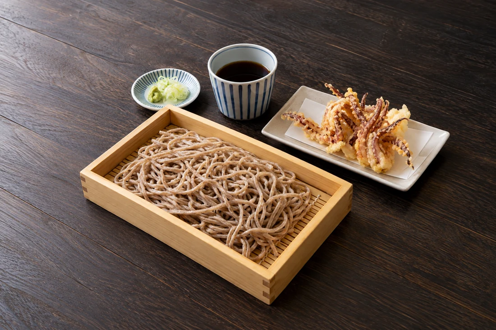
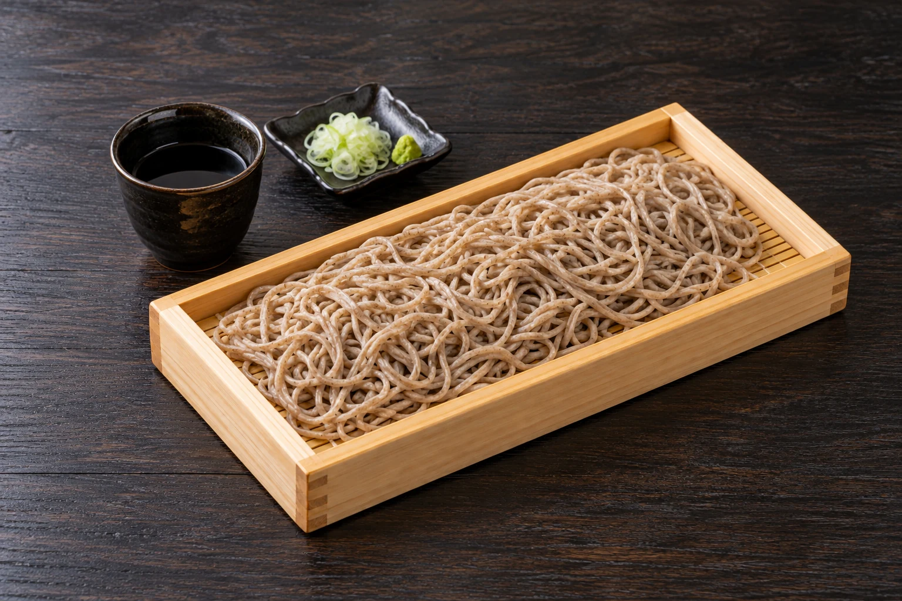
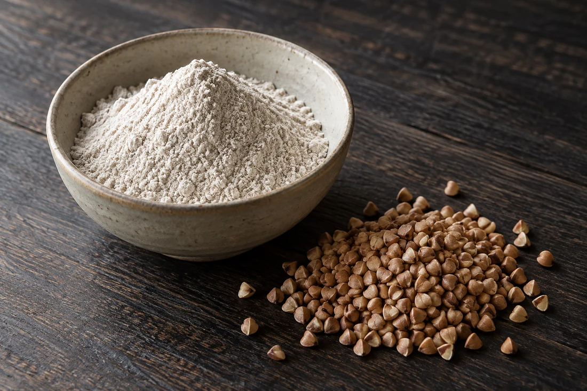
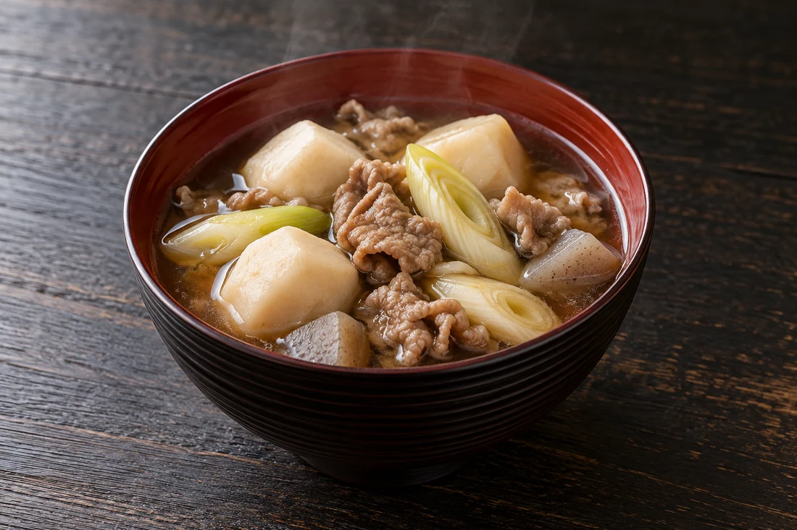
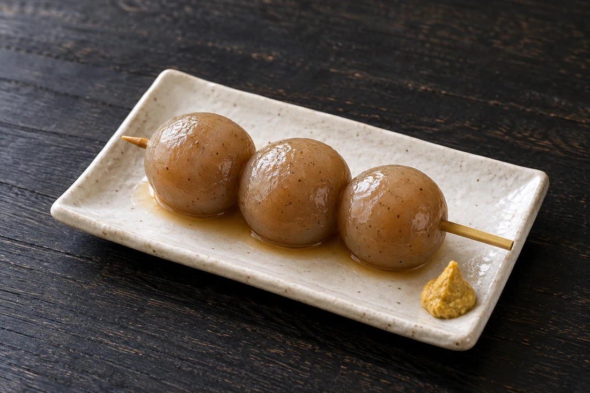
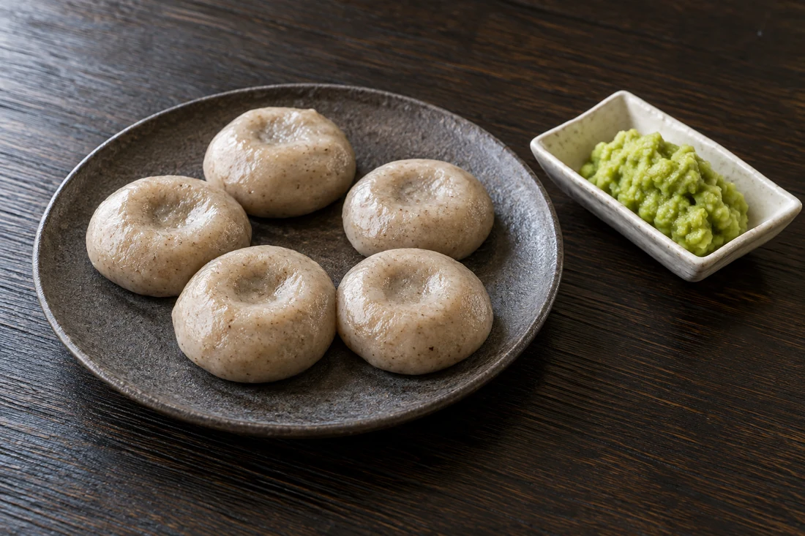

十割げそ板そば
並 2,035円
蕎麦の香りに、げそ天の香ばしさ。
麺と衣の食感を楽しむ組み合わせです。
山形・山寺駅前
自家製粉 ／ 手打ち ／ 十割
つなぎを使わない、十割の香り。
山形の蕎麦を、木の板いっぱいに。
旅のひとときを、焔藏で。
山形蕎麦の焔藏 山寺店

並 1,650円
01 焔藏のそば
山形県大蔵村で育つ在来品種、
「最上早生（もがみわせ）」。
その蕎麦を自家製粉し、手打ちで仕上げます。
そば粉だけで打つからこそ、
まずは蕎麦の香りとコシを、まっすぐに。
つゆにつけるひと口にも、豊かな余韻が広がります。

大蔵村の「最上早生」。
蕎麦を育てる土地と作り手に思いを寄せて。
粉から蕎麦へ。
ひとつひとつの仕事が、香りと食感につながります。
つなぎを使わずに仕上げる一枚。
まず味わいたい、焔藏の蕎麦です。
03 山形の味
蕎麦だけで終わらない、山形の食卓。
郷土の味を添えれば、旅の楽しみが広がります。

660円
里芋と牛肉のうまみが溶け合う、温かな一椀。
山形の郷土の味を、お蕎麦のおともに。

110円
山寺散策にもなじみの、素朴なひと品。
からしを少し添えて、どうぞ。

05 山寺から続く想い
焔藏のはじまりは、この山寺。
この地の「おのや」の伝統を受け継ぎ、
山形の食文化を伝えています。
蕎麦を育てる人、打つ人、味わう人。
ひと皿を通して、そのつながりを未来へ。
山寺を訪れる一日に、焔藏のお蕎麦をどうぞ。
06 ご来店の前に
そばを使用した料理を提供しています。食物アレルギーのある方は、ご注文前にスタッフへご相談ください。
ご予約は承っておりません。
ご来店の順にお席へご案内いたします。
十割そばは数量限定です。ご希望の際は、ご来店前に提供状況をお電話でお問い合わせください。
023-665-4770に電話する11:00〜15:00、ラストオーダー14:30。水曜日が定休日です。臨時休業や変更については、ご来店前にお電話でご確認ください。
駐車場所・ご利用条件については、店舗へお電話でお問い合わせください。
07 店舗案内
参拝の前に。
散策のあとの、お昼ごはんに。
山形蕎麦の
営業日・営業時間は変更になる場合があります。
お出かけ前にお電話でご確認ください。
地図を開いて、現在地からの経路をご確認いただけます。
山寺の一日に、焔藏の蕎麦。